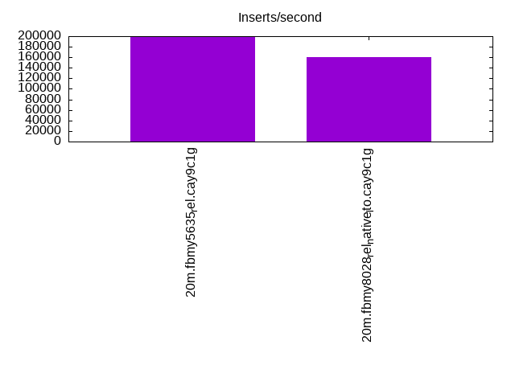
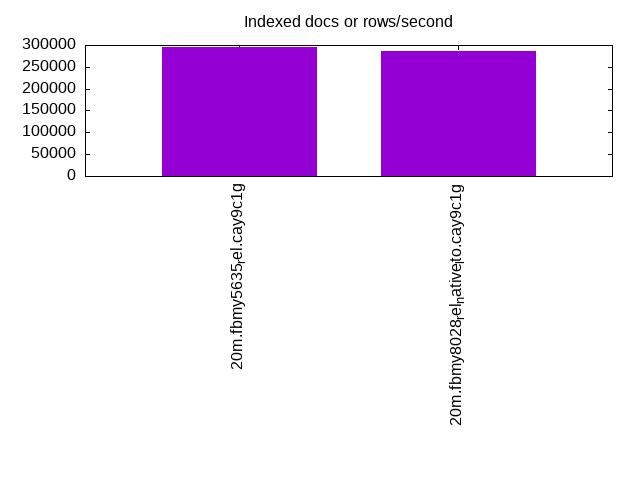
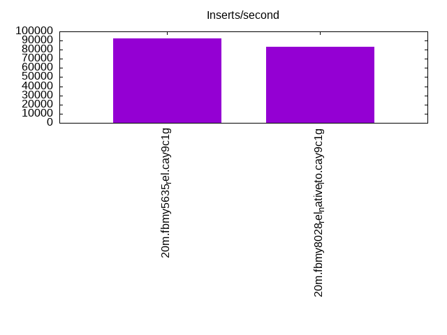
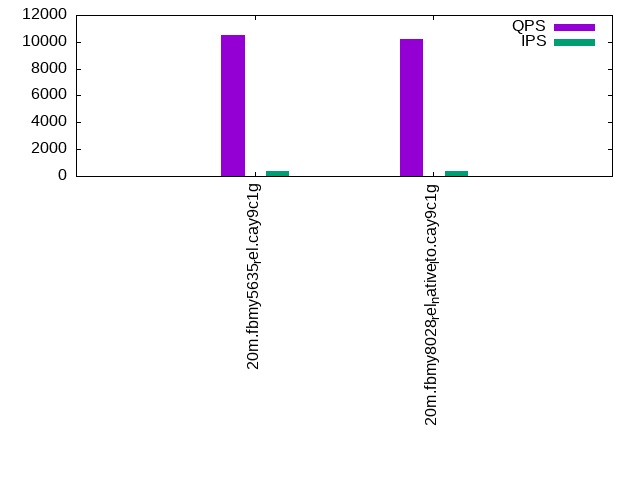
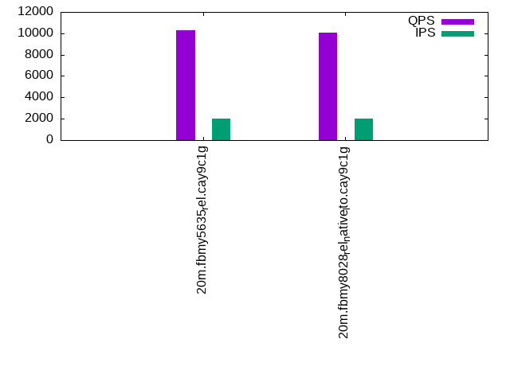
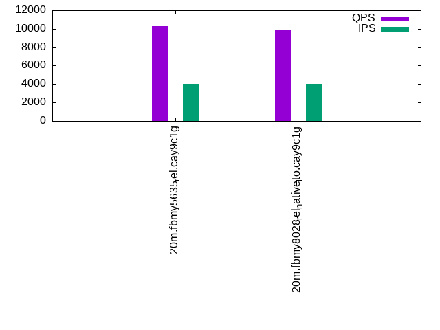

This is a report for the insert benchmark with 20M docs and 4 client(s). It is generated by scripts (bash, awk, sed) and Tufte might not be impressed. An overview of the insert benchmark is here and a short update is here. Below, by DBMS, I mean DBMS+version.config. An example is my8020.c10b40 where my means MySQL, 8020 is version 8.0.20 and c10b40 is the name for the configuration file.
The test server has 8 AMD cores, 16G RAM and an NVMe SSD. It is described here as the Beelink. The benchmark was run with 4 clients and there were 1 or 2 connections per client (1 for queries, 1 for inserts). The benchmark loads 20M rows without secondary indexes, creates secondary indexes, loads another 20M rows then does 3 read+write tests for one hour each that do queries as fast as possible with 100, 500 and then 1000 writes/second/client concurrent with the queries. There is one table per client. The database is cached by the OS page cache but not by the storage engine. Clients and the DBMS share one server. The per-database configs are in the per-database subdirectories here.
The tested DBMS are:
The numbers are inserts/s for l.i0 and l.i1, indexed docs (or rows) /s for l.x and queries/s for q*.2. The values are the average rate over the entire test for inserts (IPS) and queries (QPS). The range of values for IPS and QPS is split into 3 parts: bottom 25%, middle 50%, top 25%. Values in the bottom 25% have a red background, values in the top 25% have a green background and values in the middle have no color. A gray background is used for values that can be ignored because the DBMS did not sustain the target insert rate. Red backgrounds are not used when the minimum value is within 80% of the max value.
| dbms | l.i0 | l.x | l.i1 | q100.1 | q500.1 | q1000.1 |
|---|---|---|---|---|---|---|
| 20m.fbmy5635_rel.cay9c1g | 198020 | 295588 | 92592 | 10514 | 10269 | 10270 |
| 20m.fbmy8028_rel_native_lto.cay9c1g | 160000 | 287143 | 83333 | 10244 | 10067 | 9909 |
This table has relative throughput, throughput for the DBMS relative to the DBMS in the first line, using the absolute throughput from the previous table.
| dbms | l.i0 | l.x | l.i1 | q100.1 | q500.1 | q1000.1 |
|---|---|---|---|---|---|---|
| 20m.fbmy5635_rel.cay9c1g | 1.00 | 1.00 | 1.00 | 1.00 | 1.00 | 1.00 |
| 20m.fbmy8028_rel_native_lto.cay9c1g | 0.81 | 0.97 | 0.90 | 0.97 | 0.98 | 0.96 |
This lists the average rate of inserts/s for the tests that do inserts concurrent with queries. For such tests the query rate is listed in the table above. The read+write tests are setup so that the insert rate should match the target rate every second. Cells that are not at least 95% of the target have a red background to indicate a failure to satisfy the target.
| dbms | q100.1 | q500.1 | q1000.1 |
|---|---|---|---|
| fbmy5635_rel.cay9c1g | 399 | 1994 | 3989 |
| fbmy8028_rel_native_lto.cay9c1g | 399 | 1994 | 3989 |
| target | 400 | 2000 | 4000 |
l.i0: load without secondary indexes. Graphs for performance per 1-second interval are here.
Average throughput:
Insert response time histogram: each cell has the percentage of responses that take <= the time in the header and max is the max response time in seconds. For the max column values in the top 25% of the range have a red background and in the bottom 25% of the range have a green background. The red background is not used when the min value is within 80% of the max value.
| dbms | 256us | 1ms | 4ms | 16ms | 64ms | 256ms | 1s | 4s | 16s | gt | max |
|---|---|---|---|---|---|---|---|---|---|---|---|
| fbmy5635_rel.cay9c1g | 99.749 | 0.237 | 0.001 | 0.013 | 0.107 | ||||||
| fbmy8028_rel_native_lto.cay9c1g | 99.302 | 0.483 | 0.202 | 0.013 | 0.139 |
Performance metrics for the DBMS listed above. Some are normalized by throughput, others are not. Legend for results is here.
ips qps rps rmbps wps wmbps rpq rkbpq wpi wkbpi csps cpups cspq cpupq dbgb1 dbgb2 rss maxop p50 p99 tag 198020 0 0 0.0 122.2 51.5 0.000 0.000 0.001 0.267 20134 72.1 0.102 29 0.9 1.9 0.4 0.107 55157 22284 20m.fbmy5635_rel.cay9c1g 160000 0 0 0.0 111.2 44.3 0.000 0.000 0.001 0.284 16148 66.6 0.101 33 0.7 1.9 0.8 0.139 43253 29267 20m.fbmy8028_rel_native_lto.cay9c1g
l.x: create secondary indexes.
Average throughput:
Performance metrics for the DBMS listed above. Some are normalized by throughput, others are not. Legend for results is here.
ips qps rps rmbps wps wmbps rpq rkbpq wpi wkbpi csps cpups cspq cpupq dbgb1 dbgb2 rss maxop p50 p99 tag 295588 0 1 0.0 131.8 55.7 0.000 0.000 0.000 0.193 656 48.6 0.002 13 1.4 2.4 1.6 0.003 NA NA 20m.fbmy5635_rel.cay9c1g 287143 0 1 0.0 113.8 47.4 0.000 0.000 0.000 0.169 813 47.3 0.003 13 1.4 2.7 2.2 0.008 NA NA 20m.fbmy8028_rel_native_lto.cay9c1g
l.i1: continue load after secondary indexes created. Graphs for performance per 1-second interval are here.
Average throughput:
Insert response time histogram: each cell has the percentage of responses that take <= the time in the header and max is the max response time in seconds. For the max column values in the top 25% of the range have a red background and in the bottom 25% of the range have a green background. The red background is not used when the min value is within 80% of the max value.
| dbms | 256us | 1ms | 4ms | 16ms | 64ms | 256ms | 1s | 4s | 16s | gt | max |
|---|---|---|---|---|---|---|---|---|---|---|---|
| fbmy5635_rel.cay9c1g | 99.611 | 0.379 | 0.004 | 0.007 | 0.108 | ||||||
| fbmy8028_rel_native_lto.cay9c1g | 99.250 | 0.637 | 0.106 | 0.007 | 0.108 |
Performance metrics for the DBMS listed above. Some are normalized by throughput, others are not. Legend for results is here.
ips qps rps rmbps wps wmbps rpq rkbpq wpi wkbpi csps cpups cspq cpupq dbgb1 dbgb2 rss maxop p50 p99 tag 92592 0 12 1.5 173.4 69.9 0.000 0.017 0.002 0.773 20258 73.9 0.219 64 4.3 6.0 1.3 0.108 23931 17836 20m.fbmy5635_rel.cay9c1g 83333 0 16 1.9 168.4 65.4 0.000 0.023 0.002 0.804 17939 74.3 0.215 71 3.5 5.4 1.7 0.108 21377 15783 20m.fbmy8028_rel_native_lto.cay9c1g
q100.1: range queries with 100 insert/s per client. Graphs for performance per 1-second interval are here.
Average throughput:
Query response time histogram: each cell has the percentage of responses that take <= the time in the header and max is the max response time in seconds. For max values in the top 25% of the range have a red background and in the bottom 25% of the range have a green background. The red background is not used when the min value is within 80% of the max value.
| dbms | 256us | 1ms | 4ms | 16ms | 64ms | 256ms | 1s | 4s | 16s | gt | max |
|---|---|---|---|---|---|---|---|---|---|---|---|
| fbmy5635_rel.cay9c1g | 10.299 | 89.693 | 0.007 | 0.001 | 0.012 | ||||||
| fbmy8028_rel_native_lto.cay9c1g | 7.171 | 92.818 | 0.010 | nonzero | 0.014 |
Insert response time histogram: each cell has the percentage of responses that take <= the time in the header and max is the max response time in seconds. For max values in the top 25% of the range have a red background and in the bottom 25% of the range have a green background. The red background is not used when the min value is within 80% of the max value.
| dbms | 256us | 1ms | 4ms | 16ms | 64ms | 256ms | 1s | 4s | 16s | gt | max |
|---|---|---|---|---|---|---|---|---|---|---|---|
| fbmy5635_rel.cay9c1g | 99.493 | 0.507 | 0.011 | ||||||||
| fbmy8028_rel_native_lto.cay9c1g | 99.653 | 0.319 | 0.028 | 0.017 |
Performance metrics for the DBMS listed above. Some are normalized by throughput, others are not. Legend for results is here.
ips qps rps rmbps wps wmbps rpq rkbpq wpi wkbpi csps cpups cspq cpupq dbgb1 dbgb2 rss maxop p50 p99 tag 399 10514 17 0.2 7.9 1.9 0.002 0.023 0.020 4.992 39547 50.6 3.762 385 2.8 4.7 1.4 0.012 2637 2253 20m.fbmy5635_rel.cay9c1g 399 10244 14 0.2 7.4 1.7 0.001 0.015 0.019 4.458 38719 51.2 3.780 400 2.8 4.8 1.8 0.014 2573 2047 20m.fbmy8028_rel_native_lto.cay9c1g
q500.1: range queries with 500 insert/s per client. Graphs for performance per 1-second interval are here.
Average throughput:
Query response time histogram: each cell has the percentage of responses that take <= the time in the header and max is the max response time in seconds. For max values in the top 25% of the range have a red background and in the bottom 25% of the range have a green background. The red background is not used when the min value is within 80% of the max value.
| dbms | 256us | 1ms | 4ms | 16ms | 64ms | 256ms | 1s | 4s | 16s | gt | max |
|---|---|---|---|---|---|---|---|---|---|---|---|
| fbmy5635_rel.cay9c1g | 7.758 | 92.211 | 0.030 | 0.001 | nonzero | 0.021 | |||||
| fbmy8028_rel_native_lto.cay9c1g | 4.125 | 95.826 | 0.046 | 0.002 | nonzero | 0.020 |
Insert response time histogram: each cell has the percentage of responses that take <= the time in the header and max is the max response time in seconds. For max values in the top 25% of the range have a red background and in the bottom 25% of the range have a green background. The red background is not used when the min value is within 80% of the max value.
| dbms | 256us | 1ms | 4ms | 16ms | 64ms | 256ms | 1s | 4s | 16s | gt | max |
|---|---|---|---|---|---|---|---|---|---|---|---|
| fbmy5635_rel.cay9c1g | 97.893 | 2.090 | 0.017 | 0.046 | |||||||
| fbmy8028_rel_native_lto.cay9c1g | 97.869 | 2.046 | 0.083 | 0.001 | 0.065 |
Performance metrics for the DBMS listed above. Some are normalized by throughput, others are not. Legend for results is here.
ips qps rps rmbps wps wmbps rpq rkbpq wpi wkbpi csps cpups cspq cpupq dbgb1 dbgb2 rss maxop p50 p99 tag 1994 10269 0 0.0 7.8 2.0 0.000 0.000 0.004 1.014 38467 51.1 3.746 398 3.2 3.5 1.4 0.021 2557 2238 20m.fbmy5635_rel.cay9c1g 1994 10067 0 0.0 7.1 1.6 0.000 0.000 0.004 0.845 38005 51.6 3.775 410 3.2 3.7 1.7 0.020 2493 2062 20m.fbmy8028_rel_native_lto.cay9c1g
q1000.1: range queries with 1000 insert/s per client. Graphs for performance per 1-second interval are here.
Average throughput:
Query response time histogram: each cell has the percentage of responses that take <= the time in the header and max is the max response time in seconds. For max values in the top 25% of the range have a red background and in the bottom 25% of the range have a green background. The red background is not used when the min value is within 80% of the max value.
| dbms | 256us | 1ms | 4ms | 16ms | 64ms | 256ms | 1s | 4s | 16s | gt | max |
|---|---|---|---|---|---|---|---|---|---|---|---|
| fbmy5635_rel.cay9c1g | 6.203 | 93.716 | 0.077 | 0.004 | nonzero | 0.018 | |||||
| fbmy8028_rel_native_lto.cay9c1g | 2.866 | 97.016 | 0.113 | 0.005 | nonzero | 0.019 |
Insert response time histogram: each cell has the percentage of responses that take <= the time in the header and max is the max response time in seconds. For max values in the top 25% of the range have a red background and in the bottom 25% of the range have a green background. The red background is not used when the min value is within 80% of the max value.
| dbms | 256us | 1ms | 4ms | 16ms | 64ms | 256ms | 1s | 4s | 16s | gt | max |
|---|---|---|---|---|---|---|---|---|---|---|---|
| fbmy5635_rel.cay9c1g | 93.808 | 6.151 | 0.042 | 0.056 | |||||||
| fbmy8028_rel_native_lto.cay9c1g | 94.706 | 5.166 | 0.128 | 0.061 |
Performance metrics for the DBMS listed above. Some are normalized by throughput, others are not. Legend for results is here.
ips qps rps rmbps wps wmbps rpq rkbpq wpi wkbpi csps cpups cspq cpupq dbgb1 dbgb2 rss maxop p50 p99 tag 3989 10270 0 0.0 15.4 5.0 0.000 0.000 0.004 1.290 37504 53.3 3.652 415 3.7 4.9 1.4 0.018 2509 2207 20m.fbmy5635_rel.cay9c1g 3989 9909 0 0.0 15.3 4.9 0.000 0.000 0.004 1.262 36735 53.8 3.707 434 3.7 5.1 1.8 0.019 2493 2014 20m.fbmy8028_rel_native_lto.cay9c1g
l.i0: load without secondary indexes
Performance metrics for all DBMS, not just the ones listed above. Some are normalized by throughput, others are not. Legend for results is here.
ips qps rps rmbps wps wmbps rpq rkbpq wpi wkbpi csps cpups cspq cpupq dbgb1 dbgb2 rss maxop p50 p99 tag 198020 0 0 0.0 122.2 51.5 0.000 0.000 0.001 0.267 20134 72.1 0.102 29 0.9 1.9 0.4 0.107 55157 22284 20m.fbmy5635_rel.cay9c1g 160000 0 0 0.0 111.2 44.3 0.000 0.000 0.001 0.284 16148 66.6 0.101 33 0.7 1.9 0.8 0.139 43253 29267 20m.fbmy8028_rel_native_lto.cay9c1g
l.x: create secondary indexes
Performance metrics for all DBMS, not just the ones listed above. Some are normalized by throughput, others are not. Legend for results is here.
ips qps rps rmbps wps wmbps rpq rkbpq wpi wkbpi csps cpups cspq cpupq dbgb1 dbgb2 rss maxop p50 p99 tag 295588 0 1 0.0 131.8 55.7 0.000 0.000 0.000 0.193 656 48.6 0.002 13 1.4 2.4 1.6 0.003 NA NA 20m.fbmy5635_rel.cay9c1g 287143 0 1 0.0 113.8 47.4 0.000 0.000 0.000 0.169 813 47.3 0.003 13 1.4 2.7 2.2 0.008 NA NA 20m.fbmy8028_rel_native_lto.cay9c1g
l.i1: continue load after secondary indexes created
Performance metrics for all DBMS, not just the ones listed above. Some are normalized by throughput, others are not. Legend for results is here.
ips qps rps rmbps wps wmbps rpq rkbpq wpi wkbpi csps cpups cspq cpupq dbgb1 dbgb2 rss maxop p50 p99 tag 92592 0 12 1.5 173.4 69.9 0.000 0.017 0.002 0.773 20258 73.9 0.219 64 4.3 6.0 1.3 0.108 23931 17836 20m.fbmy5635_rel.cay9c1g 83333 0 16 1.9 168.4 65.4 0.000 0.023 0.002 0.804 17939 74.3 0.215 71 3.5 5.4 1.7 0.108 21377 15783 20m.fbmy8028_rel_native_lto.cay9c1g
q100.1: range queries with 100 insert/s per client
Performance metrics for all DBMS, not just the ones listed above. Some are normalized by throughput, others are not. Legend for results is here.
ips qps rps rmbps wps wmbps rpq rkbpq wpi wkbpi csps cpups cspq cpupq dbgb1 dbgb2 rss maxop p50 p99 tag 399 10514 17 0.2 7.9 1.9 0.002 0.023 0.020 4.992 39547 50.6 3.762 385 2.8 4.7 1.4 0.012 2637 2253 20m.fbmy5635_rel.cay9c1g 399 10244 14 0.2 7.4 1.7 0.001 0.015 0.019 4.458 38719 51.2 3.780 400 2.8 4.8 1.8 0.014 2573 2047 20m.fbmy8028_rel_native_lto.cay9c1g
q500.1: range queries with 500 insert/s per client
Performance metrics for all DBMS, not just the ones listed above. Some are normalized by throughput, others are not. Legend for results is here.
ips qps rps rmbps wps wmbps rpq rkbpq wpi wkbpi csps cpups cspq cpupq dbgb1 dbgb2 rss maxop p50 p99 tag 1994 10269 0 0.0 7.8 2.0 0.000 0.000 0.004 1.014 38467 51.1 3.746 398 3.2 3.5 1.4 0.021 2557 2238 20m.fbmy5635_rel.cay9c1g 1994 10067 0 0.0 7.1 1.6 0.000 0.000 0.004 0.845 38005 51.6 3.775 410 3.2 3.7 1.7 0.020 2493 2062 20m.fbmy8028_rel_native_lto.cay9c1g
q1000.1: range queries with 1000 insert/s per client
Performance metrics for all DBMS, not just the ones listed above. Some are normalized by throughput, others are not. Legend for results is here.
ips qps rps rmbps wps wmbps rpq rkbpq wpi wkbpi csps cpups cspq cpupq dbgb1 dbgb2 rss maxop p50 p99 tag 3989 10270 0 0.0 15.4 5.0 0.000 0.000 0.004 1.290 37504 53.3 3.652 415 3.7 4.9 1.4 0.018 2509 2207 20m.fbmy5635_rel.cay9c1g 3989 9909 0 0.0 15.3 4.9 0.000 0.000 0.004 1.262 36735 53.8 3.707 434 3.7 5.1 1.8 0.019 2493 2014 20m.fbmy8028_rel_native_lto.cay9c1g
Insert response time histogram
256us 1ms 4ms 16ms 64ms 256ms 1s 4s 16s gt max tag 0.000 0.000 99.749 0.237 0.001 0.013 0.000 0.000 0.000 0.000 0.107 fbmy5635_rel.cay9c1g 0.000 0.000 99.302 0.483 0.202 0.013 0.000 0.000 0.000 0.000 0.139 fbmy8028_rel_native_lto.cay9c1g
TODO - determine whether there is data for create index response time
Insert response time histogram
256us 1ms 4ms 16ms 64ms 256ms 1s 4s 16s gt max tag 0.000 0.000 99.611 0.379 0.004 0.007 0.000 0.000 0.000 0.000 0.108 fbmy5635_rel.cay9c1g 0.000 0.000 99.250 0.637 0.106 0.007 0.000 0.000 0.000 0.000 0.108 fbmy8028_rel_native_lto.cay9c1g
Query response time histogram
256us 1ms 4ms 16ms 64ms 256ms 1s 4s 16s gt max tag 10.299 89.693 0.007 0.001 0.000 0.000 0.000 0.000 0.000 0.000 0.012 fbmy5635_rel.cay9c1g 7.171 92.818 0.010 nonzero 0.000 0.000 0.000 0.000 0.000 0.000 0.014 fbmy8028_rel_native_lto.cay9c1g
Insert response time histogram
256us 1ms 4ms 16ms 64ms 256ms 1s 4s 16s gt max tag 0.000 0.000 99.493 0.507 0.000 0.000 0.000 0.000 0.000 0.000 0.011 fbmy5635_rel.cay9c1g 0.000 0.000 99.653 0.319 0.028 0.000 0.000 0.000 0.000 0.000 0.017 fbmy8028_rel_native_lto.cay9c1g
Query response time histogram
256us 1ms 4ms 16ms 64ms 256ms 1s 4s 16s gt max tag 7.758 92.211 0.030 0.001 nonzero 0.000 0.000 0.000 0.000 0.000 0.021 fbmy5635_rel.cay9c1g 4.125 95.826 0.046 0.002 nonzero 0.000 0.000 0.000 0.000 0.000 0.020 fbmy8028_rel_native_lto.cay9c1g
Insert response time histogram
256us 1ms 4ms 16ms 64ms 256ms 1s 4s 16s gt max tag 0.000 0.000 97.893 2.090 0.017 0.000 0.000 0.000 0.000 0.000 0.046 fbmy5635_rel.cay9c1g 0.000 0.000 97.869 2.046 0.083 0.001 0.000 0.000 0.000 0.000 0.065 fbmy8028_rel_native_lto.cay9c1g
Query response time histogram
256us 1ms 4ms 16ms 64ms 256ms 1s 4s 16s gt max tag 6.203 93.716 0.077 0.004 nonzero 0.000 0.000 0.000 0.000 0.000 0.018 fbmy5635_rel.cay9c1g 2.866 97.016 0.113 0.005 nonzero 0.000 0.000 0.000 0.000 0.000 0.019 fbmy8028_rel_native_lto.cay9c1g
Insert response time histogram
256us 1ms 4ms 16ms 64ms 256ms 1s 4s 16s gt max tag 0.000 0.000 93.808 6.151 0.042 0.000 0.000 0.000 0.000 0.000 0.056 fbmy5635_rel.cay9c1g 0.000 0.000 94.706 5.166 0.128 0.000 0.000 0.000 0.000 0.000 0.061 fbmy8028_rel_native_lto.cay9c1g